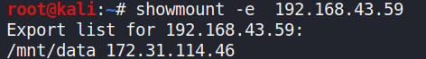
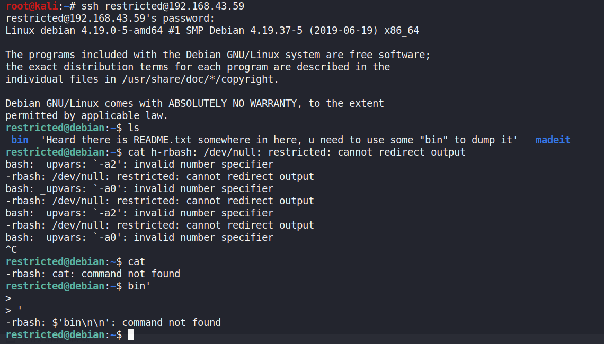
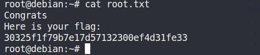
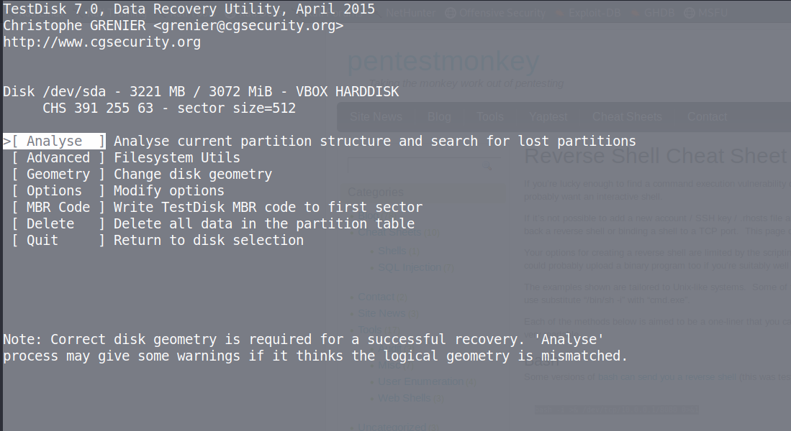
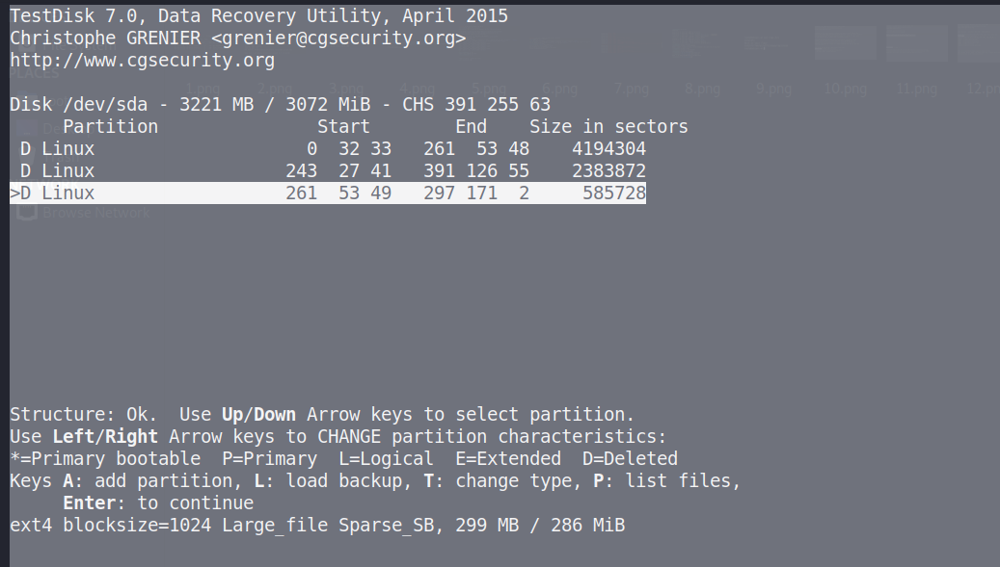
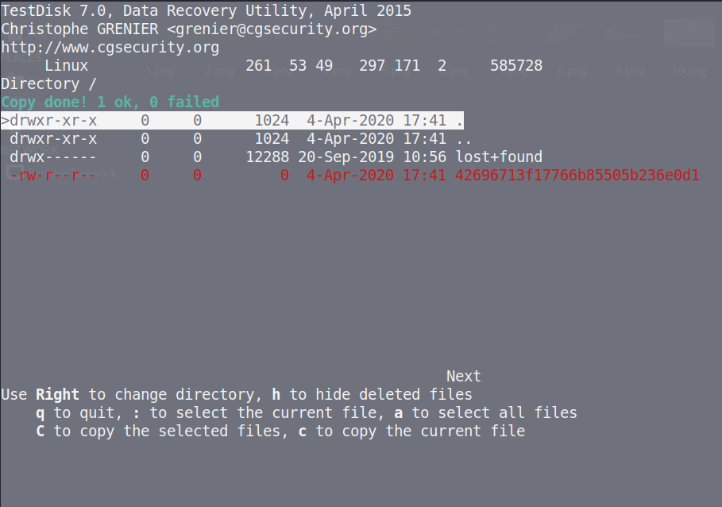

IJCTF Boot2root Writup

Flag 1
ok so lets start with the obvious
netdiscover
as we don’t know the machine ip

following up with the nmap scan

interesting so we have nfs open lets check if there are any folders to share

So now the process was very simple the box had 2 nic one to use for NAT and other for host-only adapter So we need to configure host-only adapter ip according to the ip specified to Fool the box as the challenge name suggests
A useful guide I found on the internet I did not use the 2 nics but i should have :(
Anyways using mount command we mount the folder and read the flag1 I am attaching the screenshot of the same file from inside the box i wanted to prevent the unnecesary pain of changing adapters

Flag 2
This was the flag that suprised me a the most trying to login as restricted
As the name suggest and shown below its a restricted shell

after try all the commands I know on linux i read this article which turned out to be very useful
I got a normal shell as shown below and the README.txt file was very hard for me to guess as the I couldn’t use ls in madeit directory
anyways got it after 2-3 hours of brainfuck

Flag 3
This was one of the main flag that made me go crazy I got a lot of help from the admin on this I ran linPEAS but got nothing Then the author told me to use pspy64 this turned out to be tool that looked for hidden cronjobs and it showed thatf final.sh was being run as root

And since final.sh was root only read-write I could do nothing Once again the great admin came to my rescue :) He told me to see permissions of ross’s home directory so it seems that files directory had ross as the group so we could modify it this means that we can make a new final.sh with same path and revshell in it to get the root shell

We got the root flag as well atlast :)))))

Note:I got flag 4 after the ctf was over
Flag 4
NOTE: Stabilise the shell before doing anything
the hint was about forensics tool; what can be the tools with disk image volatility –> NOOOO testdisk –> YES
SEE the following images to see the steps I followed to get the final flag!!





press p to list files

keep pressing c until you get something like shown below

there is the final flag for you !!

if you have any doubts ping me up on Discord!!
Comments